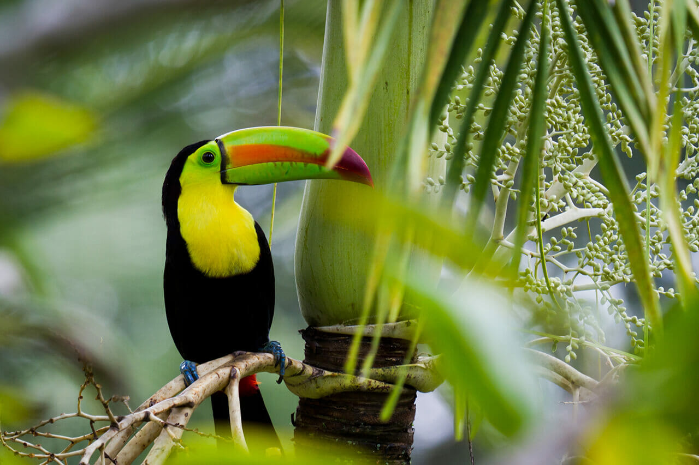

Our Trips
Book Now!
Rich Coast trips
Our rafting trips are all measured by the international white water grading standards, which enables rafters of all skill levels to take to pick the best adventure for their choose. Why Costa Rica? Costa Rica is rated as one of the best places in the world to raft. With tropical scenery, exotic animals, warm waters, and continuous rapids
Our Trips
| Trips Details | ||
|---|---|---|
| Arenal River: $68 Includes Transportation The best attention. Certify bilingual Guides. Snacks at the end. Ice-cold drinks. Dry towels. What To Bring Quick Dry clothing Changeable clothes Sunscreen Water Shoes (No Flip flops) Repellent Camera and / or Binoculars | Reventazon River: $78 River Difficulty Class 2 and 3 River Run Time 10 km Includes Transportation to and from most La Fortuna hotels. Bilingual certified guides. Fruit and snacks on the river. Ice-cold drinks Towels and lunch. What To Bring Bathing Suit T-shirt Sun Screen Change of clothing Secure shoes such as water shoes or sports sandals Small amount of cash to tip your rafting guides | Sarapiqui River: $95 River Difficulty Class III, IV | Minimum age 12 years old Includes Transportation to and from most La Fortuna hotels. Bilingual certified guides. Fruit and snacks on the river. Ice cold drinks Towels and lunch. What To Bring Bathing Suit T-shirt Sun Screen Secure shoes such as water shoes or sports sandals Change of clothing Small amount of cash to tip your rafting guides |